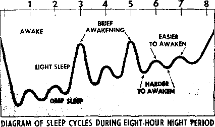

Getting to Know the Son of God
PAGE 3
Now to Cut Down Household Expenses
PAGE S
Do You Get the Sleep You Need?
PAGE 12
Home Care for the Sick
PAGE 20
APRIL 8. 1969
THE REASON FOR THIS MAGAZINE
News sources that are able to keep you awake to the vital issues of our times must be unfettered by censorship and selfish interests. "Awake!" has no fetters, ft recognizes facts, faces facts, is free to publish facts. It is not bound by political ties; it is unhampered fay traditional creeds. This magazine keeps itself free, that it may speak freely to you. But it does not abuse its freedom. It maintains integrity to truth.
The viewpoint of "Awake!" is not narrow, but is international. "Awake!" has its own correspondents in scores of nations. Its articles are read in many lands, in many languages, by millions of persons.
In every issue "Awake!” presents vital topics on which you should be informed. It features penetrating articles on social conditions and offers sound counsel for meeting the problems of everyday life. Current news from every continent passes In quick review. Attention is focused on activities in the fields of government and commerce about which you should know. Straightforward discussions of religious issues alert you to matters of vital concern. Customs and people in many lands, the marvels of creation, practical sciences and points of human interest are all embraced in its coverage. "Awake!" provides wholesome, instructive reading for every member of the family.
"Awake!” pledges itself to righteous principles, to exposing hidden foes and subtle dangers, to championing freedom for ail, to comforting mourners and strengthening those disheartened by the failures of a delinquent world, reflecting sure hope for the establishment of God's righteous new order in this generation.
Get acquainted with "Awake!” Keep awake by reading "Awake!"
Published Simultaneously in the United States by the WATCHTOWER BIBLE AND TRACT SOCIETY OF NEW YORK. INC. 117 Adams Street Brooklyn. N.Y. 11201. U.S.A.
and in Enoland ey WATCH TOWER BIBLE AND TRACT SOCIETY
Watch Tower House, The Ridgeway London N.W. 7, England N. H. Knorr, President Grant Suites, Secretary
Average printing each issue: 5,550,000 3d a copy (Australia, Sooth Africa,
Yearly fiubscrlptlon rates
Office for semimonthly editions
Canada, 150 Bridge] and Ave., Toronto 19, Out.
Ertyland, Watch Tower Holism,
He* JftaJand, t>’l .Xew JShirtb Rd., AijrJtfajid Ji South Africa, Private Hag 2. P.O, Elandsfonteln, Tri. 70c (Monthly Editions cost half the above ratw.) fhMittatrces fur subscriptions should be sent to the office in your country. Other* tee Bend ytrnr remittance to Brooklyn. Notice of expiration id Bent at least two issiifti before subscription expires,
Now published in 26 languages
Semimonthly - Afrikaans, Cebuano, Punish, Putch, English, Finnish, French, I term mi, Greek, Uolto, Italian, Japanese, Korean, Nwveginn, i'orttiguew!, Spanish. Swedish, Tagalog. Eu]||,
Monthly- Chinese, Cinyauia, Hlligaynon, Malayalam, PiMUb, Tamil, Ukrainian.
|
CHANGES OF ADDRESS shoild Wh |
as thirty day* | |
|
before ywf mw/nff date. 6 Ire |
w ywr |
oM ftmf <wr |
|
address (If possible, year old |
address |
label h Write |
|
Watch Tower, Watch Tower Landon N.W. 7, England. |
House, |
The Ridgeway, |
Entcred as second-elaas matter at Rroukljn, N.Y. Printed in England
The Bible translation regalarly osed In “Awake!” Is the New World Translation of the Holy Scriptices, 1961 edition. When other translations art and, this Is otearly marked.
|
Getting to Know the Son of God |
3 |
Lessons from Experiences of Youths |
24 |
|
How to Cut Down Household Expenses |
8 |
Good News in Dahomey |
25 |
|
“The Duty of Every Man” |
11 | ||
|
Do You Get the Sleep You Need? |
12 |
The Watch Tower Publications Index |
26 |
|
Evolution or Deterioration? |
16 |
“Your Word Is Truth" | |
|
The Great Los Angeles Flood |
17 |
Do True Christians Speak | |
|
Home Care for the Sick |
20 |
in Tongues Today? |
27 |
|
Miles of Water |
23 |
Watching the World |
29 |
GETTING * to
Fathers have a God-given obligation to teach their children about things pertaining to worship. But to do this in a way that children enjoy is not always easy. Perhaps we can imagine some such instruction being given in the following manner.
line of Plato’s writing.
“The fact is,” father said, “you know more teachings of Jesus Christ than you do of Plato.”
Johnny’s face showed surprise. “I guess you’re right,” he said. “I know the Lord’s prayer and the Golden Rule, and
ONE warm summer day, my father and
I were going through Central Park with a group of the neighborhood children. We found ourselves a nice place to sit and relax for a moment. Dad was easy to talk to, and that morning we talked about many things. We spoke about why sap stops running in the autumn and why leaves turn color. We talked about rivers and people, but Dad is always at his best when his subject is the Bible. He speaks about God and Jesus Christ as if he knew them personally.
Johnny, a neighbor friend, whose parents do not belong to any religion but read a lot, quite innocently praised Plato as a great teacher and philosopher. Dad looked at him in his fatherly way. “Tell me, johnny,” he said, “what are some of the things Plato taught?”
Johnny hesitated a moment and then shrugged his shoulders in embarrassment, because he could not recall a single that’s more than I know about what Plato taught.”
Dad was serious, but in his pleasant manner he pressed the matter further.
“You know some of Jesus’ parables, too, Johnny.”
Johnny laughed dryly. “Guess I do at that. There’s the Good Samaritan and the Prodigal Son.”
“Now you see what I mean about Christ being a great teacher? He taught mankind in such ways that it is hard to forget what he taught.”
There was a slight pause, and then Dad curiously asked, “Why did you say Plato was a great teacher?”
“I don’t know. Force of habit, I guess,” was Johnny’s reply.
Dad laughed and ruffled his hair. Then we all got up and went to the zoo in happy frames of mind.
All that week I thought of that brief exchange and admired how Dad handled it
Johnny will never forget that Jesus was a great teacher, nor will any of us children who were there that morning. Then one evening when father and I were together, I asked him: “If my schoolmates were to ask me what made Jesus a great teacher, how might I answer them?”
Father put his arm around my shoulder and said: “Son, Jesus was not just a great teacher. He was the greatest teacher that ever lived on earth. Not only that, he was the greatest man that ever lived.”
“But the kids at school don’t feel that way anymore, Dad,’’ I said. “They ask, ‘Who was Jesus? A carpenter, a preacher, a man who never wrote a book, never held an office, never owned a home, never married, never went to college, never did any of the things that count today for greatness. So why call him great?’ they say.”
Father shook his head thoughtfully and smiled. “I know,” he said. Without answering further he motioned for me to follow him. Together we went into our little home library. There he pulled out a map of the Bible lands, and he pointed to the various places where Jesus traveled on foot and enumerated some of the things Jesus said and did. It was impressive. Then, he turned to John 21:25 and read: “There are, in fact, many other things also which Jesus did, which, if ever they were written in full detail, I suppose, the world itself could not contain the scrolls written.”
“Of whom else could that be said?” father asked. “What young man thirty-three and a half years old could match that record?”
As if that were not enough, he quoted an author who said of Jesus: “I am far within the mark when I say that all the armies that ever marched, and all the navies that ever were built, and all the parliaments that ever sat, and all the kings that ever reigned, put together have not affected the life of man upon this earth as powerfully as has that One Solitary Life.”
“Christianity is the following of Jesus Christ,” father said to me. “To know him aright is life eternal. There is no other name given under heaven whereby we might be saved. That’s how important he is!”—Acts 4:12.
In school we at times argue among students about the greatness of Jesus Christ. A number of students believe that through the centuries the accomplishments of Jesus Christ have been magnified out of proportion, so that we today have a distorted picture of Christ and his works. I told Dad this. He thought awhile before replying.
In our study at home we have a small microscope, an inexpensive one, but it is still in good shape. Father went over to it and, after placing his hand on it, said:
“Through the powers of this amazing mechanism things that, are normally invisible to the human eye are clearly seen in minute detail. But we seldom stop to think that when we have thus magnified an object we have not changed its actual size one iota. It still remains its unaffected self in every sense. Right? The power of the microscope affects only the observer, giving him a wider, broader and deeper vision through which he can gain additional knowledge. Well, it’s the same with Jesus. He remains what he was and is despite what men might say of him or do. We certainly cannot glorify him beyond that which God has already done. We can imitate him, but make him greater or less than he is—No. He is beyond the reach of man. Nevertheless, we can enlarge our own understanding and broaden our own viewpoint of him with the help of the proper instrument. It is for this purpose that God has given us the Bible. When we study the man Jesus Christ, looking at him through the lens of the Bible, he remains unaffected, but our vision of him is enlarged. We can then see him in true perspective.”
Father then brought an interesting fact to my attention, namely, that people always want to know about Christ’s origin.
“Nobody wonders about where you or I came from," Dad said. “Few people ask about the origin of Buddha, Plato or Abraham Lincoln, but they do wonder about the origin of Christ. Even a Soviet university lecturer theorized that Jesus was actually a spaceman from another planet who came to earth. Still the life of Jesus is laid out plainly for us in the Bible step by step. We know that Jesus was born in Bethlehem, that Mary was his mother and that Joseph was his foster father, that in his early years he worked as a carpenter, that he entered the ministry when thirty and was put to death three and a half years later.”
When I told father that the youths at school were puzzled at my statement that Jesus had an existence before his human birth, father’s reply was enlightening.
He said: “Yes, the Bible does show that Jesus had a prehuman existence an heaven; in fact, that he was the very first of God’s spirit creatures.”—Col. 1:15: Rev. 3:14.
Dad paused a moment and said: “Young people today might say Jesus was not college-bred, but they fail to realize that his past experience in heaven gave him resources of knowledge and wisdom far beyond those of any other man who has lived, regardless of the man’s education. Jesus was actually God’s co-worker in making the universe and all the forms of life in it. Others of mankind can only study the things that Jesus had a share in making; they learn from him, not he from them.”—John 1:3; Prov. 8:22-31.
Dad continued: “It was Jesus who said: ’Man must live, not on bread alone, but on every utterance coming forth through Jehovah's mouth.’ (Matt. 4:4} People were amazed at his learning. They asked: ‘How does this man have a knowledge of letters, when he has not studied at the schools?’ (John 7:15) Again they asked: Where did this man get this wisdom and these powerful works? Is this not the carpenter’s son?’ (Matt. 13:54, 55) Those listening to him were in constant amazement at his understanding and his answers.”
The Appearance of Jesus
Some days later when I mentioned this to a schoolmate, my friend brought up another point. He said that pictures in religious art depict Jesus as frail and weak. When I insisted that the Scriptures portray Jesus as a vivid, compelling figure, a man of intellect, power and recognizable emotions, a leader among men, he simply said that the pictures he always saw of Jesus represented him as a weakling and sad. How does one reply to persons who make such comments? I asked father. His answer showed the depth of his understanding.
“It’s true, we don’t have a painting or a sculpture of Jesus that was actually done of him in his day. Though his disciples faithfully recorded his words and deeds, no description of Jesus’ physical traits can be found in the Greek Scriptures. Yet down through the centuries, Jesus has become the most painted and sculptured of ail men. While the Scriptures suggest nothing extraordinary about Jesus’ physical appearance, yet he must have been tanned and hardy from outdoor living.”
Dad continued to explain what he thought about Jesus* appearance.
“One cannot help but believe that he was powerfully built,” he said. “Jesus was a carpenter, and carpentry was hal'd work in his day. A carpenter would have to dig foundations, chop down trees and shape them. This took strength and, no doubt, the shoulders and arms of Jesus bore witness that he was no weakling. When Jesus twice single-handedly cleansed the temple, he gave proof to the world that he was no frail weakling, but a powerful man.”
Father hesitated a moment and then slapped his hand hard against the side of the house. “It’s the hidden beams that keep this house from falling, son,” he said. "True strength does not rest in muscles, but in faith in the Almighty, which Jesus had in perfection. His was a perfect body. But he was spiritually and mentally perfect also. Calmly, yes, even cheerfully he went forward, cheering the spirits of his disciples and others. The day he was to die, he was powerful with encouragement, saying: ‘Do not let your hearts be troubled’; 'take courage! I have conquered the world.' (John 14:1; 16:33) That shows real strength.
‘ ‘Through his arrest, imprisonment, court trials, midnight hearings, scourging, loss of food and sleep, Jesus never onee ceased to be the Master, Even Pontius Pilate was conscious of the perfect assurance and composure of the man before him. From the lips of the Roman governor burst a sentence that is a truer portrait of Jesus than any painter has given mankind, when Pilate cried out: ‘Look! The man!’ (John 19:5) That’s what Jesus was —the perfect man.”
Father’s comments made Christ seem extraordinary indeed. From the passages of Scripture that father quoted I could visualize Christ in action: He observes intently the birds, takes lessons from the lilies, speaks about garments that need patching, sees poor people buying two sparrows for a cent and a half. (Matt. 6: 26, 28; 9:16; 10:29) Christ speaks of pearls and swine, of the impossibility of serving two masters, of turning the other cheek, of a shepherd’s hunting for a sheep, of a woman’s losing a coin, and the rejoicing of angels in heaven over a sinner who repents.—Matt. 5:39; 6:24; 7; 6; 18: 12; Luke 15:8, 10.
The educated Pharisees see unlettered fishermen; Christ sees apostles. Ordinary people see the rich contributing of their wealth toward the upkeep of the temple; Christ sees the widow giving her all. People praise the long, eloquent prayers; Christ in illustration hears the plea of the tax collector to forgive him, for he is a sinner.—Mark 1:16; 3:14; 12:43; Luke 18:10-14.
Wherever Jesus goes, people gather around to listen. Men quote philosophers for support.; Jesus quotes no man for support, but refers to the Holy Scriptures as his authority. Those who listen to him are impressed. Even men sent to arrest him say: “Never has another man spoken like this.” (John 7:46) “For he was teaching them as a person having authority, and not as their scribes.” (Matt. 7:29) Jesus told parables of such originality and beauty that they have become unforgettably his.
Jesua’ speech is CAteA 'witty csSfettol expressions. He speaks of a camel going “through a needle’s eye,” of "blind guides, who strain out the gnat but gulp down the camel,” of those who look “at the straw in [their] brother’s eye, but do not consider the rafter in [their] own eye.” (Matt. 19:24; 23:24; 7:3) His words are strikingly forceful. He calls scribes and Pharisees hypocrites, "whitewashed graves.” “Cleanse first the inside of the cup and of the dish, that the outside of it also may become clean,” he says.—Matt. 23:25-27,
Every time he speaks, living pictures flash before the mind in almost every sentence, He argues with such force and clarity that ‘the great crowd listen to him with pleasure.’—Mark 12:37.
“Jesus must have been a very unhappy man, because the Bible says nothing about him smiling or laughing,” said a schoolmate of mine one day. I repeated his remark to father, and father’s reaction was quick:
“It says nothing about Jesus’ blinking either. Are we to conclude that he never blinked? Jesus is the teacher of happiness. His first miracle was turning water into wine. That brought joy and happiness to those at the wedding feast. Now we cannot expect laughter and. happiness to stem from one who never laughs, or happiness to flow from one who is unhappy. Your friend should read what James 3: XI, 12 has to say,” said Dad. “There it says that sweet and bitter waters do not spring from the same fountain, neither can fig trees produce olives, nor can salt water produce sweet water. In other words, to produce happiness Jesus had to be happy,”
Father added: “The fact that children were brought to Christ, no doubt climbing cta tofggmg to Yas garments,
begging to listen to him, is proof of his good, happy company. Jesus treated life as a gift to be enjoyed, not a penance to be served. (Matt. 18:3; Mark 10:13-16) Jesus’ father is referred to in the Scriptures as ‘the happy God.’ (1 Tim. 1:11) And Christ is the perfect image of the Father. We cannot, therefore, see God happy and his Son miserably unhappy, as some depict.”
“Twice Jesus tumea aown offers of kingship,” father once said: “Jesus refused the highest titles bestowed by man. He said there are things more vital than money and proved it with his own life. (Matt. 4:8-11; John 6:14, 15; Matt. 20:26-28) With his death came victory, for the scripture says: ‘This Jesus God resurrected.’ 'God exalted him to a superior position and kindly gave him the name that is above every other name.’ He is the immortal ‘Lord of lords and King of Kings’ and 'The Ruler of the kings of the earth.’ Is this not a life crowned with success?” —Acts 2:32, 36; Phil. 2:5-11; Rev. 17:14; 1:5.
I must agree that it is. When I asked Dad what youth today might do to find success in life, he handed me the Bible and told me to turn to 1 Peter 2:21, which to stostasce. AeAt vis
follow in his footsteps closely,’
AROUND the globe homemakers are voicing anxious concern as they watch their purchasing power shrink and commodity costs expand. Many express a hope that the financial situation may somehow be stabilized by world agreement. More practical-minded individuals, however, are analyzing their own situation for changes they personally can make to cut down household expenses.
Successfully managing a household can be compared with operating a small business. It is easy to see what would happen if more money was spent than came in. It would soon face bankruptcy. Do you find your family approaching this situation? What can be done to avoid it? Perhaps the problem has already reached the critical stage. How can a household that finds itself in deep financial trouble cut back household expenses enough to reverse its position and gain financial balance again? The first step is to analyze your expenditures with a view to reducing them where possible.
Howto CUTDOWN HOUSEHOLD EXPENSES
Fixed expenses include those items already purchased on which time payments must be made. Many items purchased on “time” fall into the luxury category, and a person is wise if he avoids being pressured into such purchases. This is a fundamental key to holding down household expenses. Unless the item is absolutely necessary, which should rarely be the case, it is unwise to make purchases on which time payments must be made.
Housing is a fixed expense for most families, but there are ways of reducing this large item.
One family, by selling their too-small house in town and buying a larger run-down house on five acres reduced their monthly payments from $117 to $77. On the extra acreage they have cleared space to rent for a couple of trailer homes. In addition, they have planted a good-sized vegetable garden, fruit trees and berries, and are also raising domestic animals both for home use and additional income. In less than four years this family that was near bankruptcy has become quite well off, and not only in money.
However, country living may prove impractical and, therefore, not solve your housing costs. In your present home, then, arc you making the best use of the space you have? Perhaps the land around your home could be used to help cut expenses. Even on a small lot, space can be found for dwarf fruit trees, and vegetables may be incorporated among the shrubs.
Also to be considered is the location of your home, which may prove to be a financial burden. If you are planning to buy or rent, a house, will you be located in a neighborhood where property taxes and other expenses will be very high? Perhaps another more suitable location can be found, Apartment dwellers in large cities may consider
renting a second apartment, then furnishing it with good used furniture and subleasing it to others to cover their own costs. Usually this takes someone with good taste and enough money for used furniture, but, should apartments be in demand, this may cut your housing costs.
Another way to cut down on fixed household expenses is by reducing utility bills. In communities that charge for refuse pickup, persons may consider composting their garbage, burning their own trash, or hauling it off to the local dump. Of course, one must take into consideration local laws that might govern these matters, as well as the feelings of close neighbors who may be affected.
Have you investigated the various types of heat for winter? A method of heating that is quite inexpensive in one area may prove to be very costly somewhere else. Many families heat with wood. In areas where wood may be obtained by merely getting a free permit from the forestry service, cutting and bringing in your own wood may save a great deal on heating expenses. If you use oil you may be able to bargain for lower prices from your supplier. However, natural gas and electricity usually have set rates.
But, regardless of the type of heat you use, make sure you have weather stripping around the windows and other places where heat might escape. The same principle holds true for those using air conditioning in the summer. Close off all rooms not used during the day, and take other steps to ensure the best cooling for your money.
If your water is metered, periodically checking all faucets for leaks is good economy. In addition, you might make it a practice to mulch your shrubs and garden to hold moisture. And, of course, make sure that your family does not needlessly use water.
If electricity is a largo utility bill for your family, probably it can be reduced by being careful not to leave unnecessary lights burning, radios or TV playing, or using hot water when cold would do. To avoid costly repair bills, be alert to frayed electric cords, and operate electric appliances under the proper conditions.
Telephone bills can be curbed with selfdiscipline on the part of all family members. Hearn the exact number of calls that can be made under the minimum cost arrangement, and try to limit your household to that figure. Long-distance calls are nice, but perhaps a letter would do as well. If such a call is necessary, make it when rates are lowest. Also, call at a time that you are sure the party with whom you want to speak will be home. Then you can make yours a station-to-station call, which is much less expensive than calling person to person.
Saving on Household Furnishings
Since new furniture is generally very expensive, it may prove good economy to purchase used furniture. Even the most exclusive interior decorators do this. They make good use of refinished and painted furniture for their clients. Often local newspapers carry notices of warehouse auctions where genuine bargains can be had for a fraction of the original price.
If you are shopping for a carpet, a used one in good condition might be found for a fraction of the cost of a new one. And rather than throw a carpet away when it begins to show wear, you might cut the best, part out and, by trimming it with suitable fringe or braid, make it into a distinctive area rug.
As far as wall hangings are concerned, often a little imagination is all one needs to decorate a home tastefully and inexpensively. Attractive prints cut from magazines, suitably framed and grouped together, add color and interest to a room.
Curtains and draperies are very expensive, either custom- or ready-made. But with pleater tape almost anyone who sews can make fine-looking draperies. If directions are needed for such a project, many books and magazine articles on the subject can be found in public libraries. Also, pieces of straight material can be hemmed and, with some unusual trim and inexpensive clamp rings, be made into very attractive curtains.
Sewing helps many families to make ends meet, A sewing machine is a good investment for women who will put it to use. If you cannot afford a new machine, a used one may suit your needs just as well. Families with children find that this investment soon pays for itself in clothing costs saved. Mending alone helps to save many dollars. Clothing costs can be reduced noticeably if repairs are made quickly.
Wise shopping for fabric, buttons, zippers and other items holds down the final cost of a garment. By keeping a small notebook in your purse with size and yardage requirements for basic garments for each member of the family, you will be equipped to take advantage of mill-end or remnant sales of quality fabric, usually at a great saving. Zippers and buttons add cost to a garment, so be sure to remove such items from clothes your family may discard.
Altering garments outgrown by one member of the family to fit a younger one is a challenge, but many families find it a very practical method of cutting clothing costs. For example, a man’s worn-out suit may be cut down for a boy, or even remade into a woman’s skirt or jumper.
Another possibility to consider are shops in your town where used garments, often of high quality, can be purchased at low prices. Your telephone directory might list such shops under “Clothing-Resale.” Thrift shops and community rummage sales are other sources a thrift-minded shopper might consider for economy purchases.
Many department stores have end-of-season sales and inventory sales twice a year. If you plan your shopping with these sales in mind you will resist the temptation to make purchases on the spur of the moment when items are still at their full price. However, sale items are no bargain unless the item is actually needed and is one you planned to buy anyway.
It is good to remember that the chief factor in the life expectancy of a garment is not necessarily its price, as many suppose, but how the item is cared for and how it is used. Thus it is not wise to allow children to play in garments purchased for school or dress wear. Also, purchasing garments that can be laundered at home will mean a saving since dry-cleaning costs are high.
Perhaps one of the greatest savings on household expenses can be made on food purchases. In the first place, a balanced, nutritious diet can do much to prevent costly illnesses in the family. And, too, surprising as it may seem, buying with a view to nutrition can often mean a monetary saving. Yes, packaged “convenience foods” frequently cost more to buy than an equal amount of the unprocessed original. To protect your family’s health, it is also well to learn how to fortify foods with health-building ingredients such as powdered milk, wheat germ, brewers’ yeast and blackstrap molasses.
Those who are in a position to do so often benefit by growing and preserving their own food. This activity can involve the entire family, and it can be a means of teaching responsibility to young ones as they do their part. Another way to provide your family with nutritious meals at a small cost is to buy large amounts of fresh vegetables and fruits in season and freeze them for later use.
It is wise to plan ahead before shopping for food. Check local newspapers for specials each week and make a careful list of just what you will need for the week. You may not be bound to that list, but having one will act as a restraint as well as a guide.
Mothers who pack school lunches find peanut butter both appreciated by the youngsters and high in food value. Adding raisins, shredded carrots or bacon bits gives variety to this fine old standby. Also, purchase of snack foods, which frequently are expensive, can wisely be held to a minimum. Popcorn is less costly than potato chips, and can provide fun for the family in popping the com.
There are, of course, many other areas that could be covered in your analysis of household spending. But for the effort really to be successful each member of the family should be involved. Children who are enlisted in the economizing effort are more apt to cooperate than those who do not understand why their parents are suddenly so careful with every dollar. And the husband should not expect his wife to do all the economizing, and then feel that he can spend excessively for his favorite interests.
By doing things together as a family, even recreation costs can be cut down. For example, family trips to museums, zoos, park areas and the like can be more enjoyable and cost far less than going to a movie, where ticket prices are increasing and moral values decreasing. Children are thus taught the valuable lesson that wholesome fun can be enjoyed without a large expenditure of money.
Understandably, families used to a certain freedom in spending may find it difficult to cut down on their household expenses. The thought and planning involved may be distasteful to them. But is it not worth the effort to be out of debt? Many families think so, and they have gained increased happiness by working together to bring their spending into line with family income.
* An opinion passed down by a Washington State district judge some time ago contains a quotation that underscores man’s primary obligation to God. The judge quoted from the writings of James Madison, who helped forge the American Constitution. The judge said:
"It is the duty of every man to render to the Creator such homage, and such only, as he believes to be acceptable to Him. This duty is precedent, both in order of time and in degree of obligation, io the claims of Civil Society. Before any man can be considered as a member of Civil Society, he must be considered as a subject of the Universe. And if a member of Civil Society, who enters into any subordinate association, must always do it with a reservation of his duty to the General Authority; much more must every man who becomes a member of any particular Civil Society, do it with a saving of his allegiance to the Universal Sovereign.”—United States v. Hillyard, 52 F. Supp. 612 (E.D. Wash. 1943).
Nations that recognize this fact will guarantee freedom of religion and protect the conscience of their citizens. Yes, allegiance to the Universal Sovereign, Jehovah God, is the primary "duty of every man.”
J ff- S?'
WHAT a delight it is to be able to go to bed after a day’s work, fall into a sound sleep, and wake up refreshed the next day!
Does your sleep fit that description? Or are you among the many who find one or more parts of this desired condition missing? Do you feel that your sleep is not adequate because you wake up many times during the night? And when you awaken the next day, do you feel tired instead of refreshed?
Many, many persons today have one, several or all of these problems. They know that proper sleep would be a delight and a refreshment, but they feel that their sleep does not produce such results. How many hours a day should you sleep? Is awakening during the night several times a sign of approaching insomnia? How should you feel when you awaken the next day?
Before discussing these aspects of sleep, it is well to see what sleep is. Just how necessary is it? What can a lack of it produce?
The need for sleep is a general rule among living creatures on the earth.
The book Sleep, by G. Luce and J. Segal, states: “It is almost impossible to find a living creature whose activity does not subside for at least one period a day. Lobsters become immobile. Clams breathe less vigorously. Butterflies fold their wings at night, attach themselves firmly to a blade of grass and refuse to budge until a civilized hour in the morning. ... At night, some fish lie on their sides at the bottom of their aquarium. Others float on the surface of the sea.”
If you have had pets such as cats, dogs or birds, you no doubt have observed their need for sleep. When the time comes, the cat or dog curls up and drops off to sleep. Birds become quiet and go to sleep when the darkness of night comes.
This general rule of sleep being required for earth’s creatures certainly applies to mankind. As far as is known, people everywhere sleep about one-third of every twenty-four-hour period. This is not just a habit that has been acquired over the centuries either, as sleep is positively needed for man’s well-being. If it were just an acquired habit, then we should expect to find some isolated tribes or cultures on earth that do not need much sleep. But none exists.
When the members of an Arctic expedition were allowed to sleep as much or as little as they wanted over a period of time, it was noted that they averaged about eight hours of sleep a day. This sleep was not based on the amount of light or darkness prevailing, as the Arctic conditions in this regard varied greatly from those most persons experience elsewhere.
Nor is sleeping just the result of the body’s becoming tired or exhausted. A person may not do any physical labor at all during the day, and may refrain from any serious mental work, yet at the end of the day, under normal conditions, sleep will overcome him. Of course, if we are very tired, Ihen sleep will be even more urgently required. But it is not exhaustion alone that makes sleep necessary.
Sleep is a mechanism that the Creator of man has provided because it is absolutely necessary, serving as a protection for the nerve networks and other body functions. Sleep actually is designed to prevent exhaustion, instead of being a mechanism that results solely from exhaustion. It is tha safe'go.WLvJi oi the wavA wcA WAy WiWl prevents overactivity that could run down the mind and body to nervous and physical collapse. As the book Soimtf IFuys to Sound Sleep, by D. and E. Laird, says, sleep is the "original tranquilizer.’’
One of the vital functions of sleep is to rest the body organs. However, in Insomnia and Its Relation to Dreams, Dr. L. Gilman states: “It appears from our studies that the most important function of sleep is that it provides an opportunity for the mind to return to a state of unconsciousness.”
Hence, it appears that one of the primary purposes of sleep, and probably the most important purpose, is to provide time for the nervous system to recuperate from its use during the day. This is particularly true of the central nervous system in the brain, that is, what we would call the mind. This becomes more apparent when we realize that during sleep the body docs not cease functioning the same way the mind does.
A person’s digestive system keeps on working during sleep. His hair continues to grow. His heart continues to pump. His lungs continue to expand and contract in breathing. So the body itself is not turned off, although many parts of it, such as the heart and the lungs, operate at a lower speed.
This lower speed does permit body parts to relax and get needed rest. In this way the breakdown of body cells due to the wear and tear of a day’s activity is kept to the very minimum, while the process of rebuilding picks up. During sleep, the general cleanup work carried on through the bloodstream operates efficiently and the balance of chemicals in the body is restored. So sleep may be compared to allowing a night crew to come in and get things vcpwiYfcA wnd vAeaneb'up lor the next day's activity.
Evidently the restoration work done in the mind during sleep is even more important. Not that the key brain cells, the neurons, are replaced on a regular basis like other body cells. Unlike other cells, the neurons are not replaced at all. Perhaps this is one reason why the brain even more urgently requires sleep than other parts of the body. Sleep shuts out the many impressions that would, otherwise come into the mind from the various senses. This closes off the many demands that are made upon the mind when awake. Sleep gives the mind, and especially the neurons, the key brain cells, a rest from all these demands, toning up the nervous system in the brain and elsewhere.
What is likely to happen if you do not get enough sleep over a long period of time? Indeed, what it you were not allowed to sleep at all for several days?
You might be surprised to know that your mind and body will go to ruin far faster from a total lack of sleep than from a total lack of food! You can survive two or three weeks of food starvation, but a total loss of sleep during that same time would reduce you to a mentally unbalanced condition from which you might not recover.
In fact, keeping persons awake was used, as a method of torture in ancient times. It is said that Perseus, the last king of Macedonia, was put to death by his Roman captors’ forcing him to stay awake. And in modern times criminals sometimes have been broken down in “third degree” methods by denying them proper sleep. Also the “brainwashing” technique that the Communists have employed on war prisoners involves denying them enough sleep.
Even the loss of just a few hours of sleep for several nights can result in irritability, head pressure and momentary illusions. It increases the probability of making errors in work and also increases the possibility of becoming injured through carelessness and fatigue. Good judgment becomes more difficult because the lack of sleep has caused mental functions to decline.
In his book, Dr. Gilman says: “It was found that the length of time a man can preserve his mental faculties without sleep varies with the constitution of the individual; but the inevitable result, before many days, is delirium.”
His report shows. what happens when an individual is denied sleep; “When frustrated in his desire to go to sleep, ... he showed increased tension, restlessness, nervousness, lack of concentration, flight of ideas. He described a feeling of gradually losing control of his mental powers, . . . The sensations, delusions, and weird thoughts and attitudes which he found coming into his mind seemed so strange to him that consciously he lost confidence in his intelligence and his ability to think and reason, really fearing that he was going insane. Actually, had the experiment been allowed to continue, this is exactly what would have happened. He would have ‘gone insane.’ ”
In another experiment, a radio announcer endeavored to stay awake for 200 hours, over eight full days, to advertise a charity. In the book Sleep we are told of the results: “Almost from the first the overpowering force of sleepiness hit him. . . . After little more than two days as he changed shoes in the hotel he pointed out . . . cobwebs in his shoes—to his eyes, at least. . . . Specks on the table began to look like bugs. He thought he saw a rabbit in the booth. He was beginning to have trouble remembering things.”
After four sleepless days, what was his condition? The report states: “Only halfway, he had reached an inexorable turning point. Now he could perform only one or two of the daily battery of tests. Tests requiring attention or minimal mental agility had become unbearable to him . . . Loss of concentration and mental agility were not the worst, however. By 110 hours [about four and a half days] there were signs of delirium. . . . [his] visual world had grown grotesque.”
After five days, he opened a bureau drawer and ran out the door screaming for help. He said he saw flames shooting out from the drawer, but of course there were none. After six days, he had become completely disoriented. He did not realize where he was and wondered who he was.
All of this adds force to the following observation in Healthways magazine: “Inadequate sleep contributes as much or more to the physical and mental breakdown of pej'sons in middle life than any half dozen of the other causes, ... in some respects sleep is more essential than any form of sustenance except air. The body will survive about as long without water, and five times longer without food, as without sleep,”
Without a doubt, then, man was created with the need for sleep. It is part of his daily cycle of living. And most assuredly it is not a “waste of time” as some people say, but is an absolute necessity for our well-being, mentally and physically.
But how much sleep should each person get? Since not all persons have the same constitution, their requirements differ. Children sleep more than adults. Then again, sleep patterns can change in later life. It is said that Woodrow Wilson could not get along without ten to eleven hours of sleep a night. George Washington reportedly got along on seven hours. And Thomas Edison, it is often claimed, needed only four or five hours a night But what is often overlooked in Edison’s case is the fact that he frequently took naps in chairs or on the cot that he kept in his laboratory.
Hence, it is difficult to establish a general rule as to how much sleep each person needs. However, broadly speaking, most persons seem to require about one-third of the day for sleep. This was evidenced in the experiments made with the Arctic expedition mentioned earlier.
One way to determine how much sleep you need is to see how long it takes you to awaken after a full night’s sleep without anyone, or anything, calling you. And then, after you have been up and around for about an hour of activity, do you feel reasonably rested? Most persons who give this test a fair and honest try over a period of time find that they need from about seven to nine hours of sleep a day. True, some persons can sleep far longer, even twelve or more hours a day. But usually this is not needed at all on a regular basis and may even be harmful, unless there is illness or some unusual condition present. Some who sleep such long periods of time are just lazy or may not want to face life, and sleep is a convenient escape.
For sleep to be most effective, each person should try to get the number of hours he needs every day, not just once or twice a week. You can get what you believe to be a good night’s sleep insofar as the number of hours are concerned, but feel tired the next day because your entire week or month has been particularly strenuous, with many nights of too little sleep. But for sleep to do the most good, one needs to get the number of hours he requires each night, on a regular basis.
Often persons feel they do not get proper sleep because of awakening several times during the night. This is especially true of those who are older. Many adults interpret this as a sign of serious sleep problems, perhaps oncoming insomnia.
While older persons may not get the same quality of sleep as they did in their youth, experiments show that waking up briefly a few times each night is no cause for alarm. The total waking time for most persons who do this is not that much. It may seem longer, but normally it amounts to a matter of only minutes before they fall asleep again.
You should not expect to have the same soundness of sleep all during the night, no matter what your age is. All persons sleep in cycles. That is, their sleep comes in “waves” of about an hour or an hour and a half in length. Each cycle is made up of a deeper sleep followed by a lighter sleep. So over the course of eight hours’ sleep the average person has had about five, six or more cycles. And the cycles become progressively lighter toward the end of our sleep for the night, as the accompanying chart shows. So it is not unusual to awaken during the lighter part of one or more of these cycles.
Nor is it unusual to move during the night in your sleep. In experiments it was found that the average person made twelve full body turns a night and, in addition, about thirty other moves that could be observed.
How should you feel in the morning when you awaken? Do not be disturbed if you feel groggy. Most persons feel that way when they first wake up. After a lengthy sleep you should not expect the mind and body to snap wide awake and begin to function as if they had not been asleep at all. There has been a long period of unconsciousness, so you should expect a period of adjustment before full consciousness and alertness are attained.
What is often thought to be tiredness on awakening in the morning may be nothing more than lingering sleepiness. But after about an hour or so of activity, this is usually dispelled. And since people have different sleep patterns and requirements, the time it takes to become fully alert will vary with each individual.
With older persons, the power to recuperate is not as great as it is in younger persons. So when they awaken, they may not feel as refreshed as young ones. Hence, they may require additional sleep, perhaps in the form of naps during the day. Winston Churchill stated: ‘‘I always went to bed at least for one hour as early as possible in the afternoon.” President Truman told of his formula to keep his energy up in later life: ‘‘If I feel tired, even while in a meeting, I excuse myself, go into a nearby room, take off my shoes, and take a nap, if only for five minutes.” And John D. Rockefeller said that in his forties he took one afternoon nap, but. as he became older he added another, until he took five brief naps a day in advanced age.
Sleep is a marvelous provision by man’s Creator. It gives the mind and body the needed rest and refreshment from the day’s activity. So it would be the course of practical wisdom to get the sleep you need.
Evolution or Deterioration?
Evolutionists contend that “nature” rejects inferior living things and selects the best for survival. It is claimed that over a period of time these “fittest” organisms continue to improve and evolve into different, more complex, superior living things. Yet, evolutionist T. Dobzhansky admits: “It has been known for a long time that artificial selection for desirable qualities in domestic animals and plants must be steadily kept up if ‘deterioration’ of the breeds is to be prevented. Such 'deterioration’ is especially rapid if domesticated forms escape from cultivation and revert to wild existence.” Thus, any improvements man has made by crossbreeding must be constantly renewed, for in the “natural” state, no such upward improvement takes place.—Genetics anti the Origin of Species, p. 96.
Mud ■ wept down off th* mountains faster than th* cars of th* fleeing wtdonts
AT THE far western edge of the United States, between the final range of mountains and the sea, sprawls Los Angeles—a giant among the world’s cities. Here the weather occasionally reminds man that, for all his efforts, he is not allpowerful.
Three major storms in less than two weeks left deep scars here. They were responsible for almost 100 deaths, and caused the mass evacuation of thousands of this normally sun-drenched region’s more than nine million inhabitants,
The second-largest metropolitan area in the United States, this region is so new that even agriculture was introduced here only two centuries ago. Yet this is a land of Hollywood and aerospace, where great distances have been conquered by modem technology. It has the world’s largest concentration of automobiles, magnificent superhighways, the ever-present telephone, and convenient air travel. This is a populous near-desert that depends crucially on imported water brought from distances that would have astounded the ancient aqueduct-building Romans.
But the dryness of the southern California summer can give way to flash storms and winter floods. Here, again, technology stepped in. Dams were built. Broad, shallow flood-control basins were judiciously constructed. Big cement troughs, cutting through the city, glare with emptiness in the summertime, to fill almost to the brim after a major rain. And thirteen thousand miles of storm drains carry excess water to the sea.
But when the storm is unusually severe, the basins can fill with silt, and the dams can give way. The water may come over the top, eating them down. Or it can begin seeping through them. If they break, a flood of water sweeps down, bringing terror and destruction.
At least three kinds of floods are known in this region: Flash floods from sudden heavy rains; disaster floods from the breaking of reservoir dams; and mud floods from the rapid erosion of hillsides burned bare by summer brush fires, or bulldozed clean for construction. All three occurred during January’s rains.
A disastrous storm had been born off Hawaii. It drifted near the California coast and stalled there, blocked by cooler air that pushed down from the Gulf of Alaska. For eight days one heavy rainfall after another swept over the Los Angeles area, pouring into this normally dry region its heaviest one-month rainfall in nearly eighty years.
On Sunday the weather report had predicted: "Scattered showers.” Monday the prediction still was: “Partly cloudy Tuesday.” But by Tuesday night hundreds of families had been stranded by bridge washouts, and 29 people had already died due to the storm. Still optimistic, the news services said that the storm had begun “to dwindle.” Southern Californians had no idea of what was In store for them!
Near this sprawling city, land on which to build is extremely valuable. The ocean had blocked its growth to the southwest, so people had looked to the mountain canyons to the north. Roads had been pushed up the canyons, and expensive homes followed them. Dikes, levees and dams protected these areas. But if something went wrong with the defenses, and the waters rampaged, these canyons could become roaring rivens, with disastrous results.
Something did go wrong above the suburbs of Azusa and Glendora, east of Los Angeles. Last August a brush fire had denuded 19,100 acres of the watershed on the south side of the San Gabriel Mountains (which reach an altitude of 10,000 feet), burning away the brush, which normally would have kept runoff waters from eroding the hillsides. Now, after four days of rain had saturated the earth till it could absorb no more, the man-made catch basins had filled with silt. On the fifth day, two inches of rain fell in just three hours, and a six-foot-high wall of mud surged down out of the mountains, at times moving faster than the cars of fleeing residents, and swept into the residential areas at the mouths of the canyons.
It swept through streets, around houses, over walls, in front doors and out the back. One home, clogged by two feet of mud on Tuesday, was shoveled clean, and then filled to the eaves with mud on Wednesday!
In Glendora, Harry Fonda went out into the dark of early morning to see what was causing all the noise. Unable to see anything from his house, he went back inside until light began to dawn a few minutes later. Then he saw that mud, water and debris were surging through his neighbor’s yard, only inches from his own. The neighbor says of that moment: “My wife made the understatement of the year. She said: ‘Dan, I think we're in trouble.’”
By Friday the weather report was even more ominous. The press warned: “New storm strikes; may last five days.” Landslides were numerous. Rain-loosened rock and earth slid down to block multi-laned highways. Washouts and floodings were widespread. Wrecked cars were swept into riverbeds. Houses were pushed from their foundations and into the streets.
Sewer lines were cut, spilling their sewage into the water. Sewage disposal plants were destroyed. Near the mountains, crews with tractors dumped the mud into big trucks, struggling to keep streets open so water could escape down them into flood channels below.
As one of many examples, the Cucamonga Canyon Wash, which sweeps down out of the San Gabriel Mountains about forty miles east of central Los Angeles, is often dry in summer. Yet it became a raging torrent that washed away roads, undermined garages, ate away back yards, cut under patios, and enlarged itself almost up to the walls of houses. The water surged out of the mountains, and on across the level valley, where it deposited boulders, swirled through houses, carried off furniture, and left deep layers of mud.
John Dennis saw the mud coming, and had the foresight to jam a quilt between the outside screen door and the main door of his house. He and his wife grabbed the rest of the bedding and their dirty clothes, and packed these down behind the door. The precaution paid off. The water and
mud swirled around the house but the door held, and the water seeped only as far back as the laundry had soaked it up—only about two feet into the house.
Los Angeles’ average yearly rainfall is only 14.7 inches. Yet in 9 days 13.15 inches of rain fell on this city, bringing the month’s total to within almost an inch of the December 1889 record.
People fled on horseback, in Cadillacs and sometimes by helicopter. Ed Liesmer, overseer of the Upland congregation of Jehovah’s witnesses, describes the evacuation there.
Sunday at 5 p.m. he got the first phone call from a member of his congregation who had been told to evacuate because a debris basin up the mountain was giving way. “Soon,” Liesmer said, “calls were coming in from all over.” The congregation, and particularly its servants, began checking to see who needed help.
The evacuation was very systematic. The local radio station said which streets should go next, giving the residents fifteen minutes to prepare to leave. Then they would be advised when their street should evacuate, going to a local public building, or to the homes of friends. The police verified that the people left, and troops came in to prevent looting.
Liesmer checked off the areas on a map, watched the pattern of evacuation, and phoned ahead to verify that the members of his congregation had heard the warnings, had the help they needed, and knew to whose home they could go for shelter.
He was particularly interested in seeing that no one had to go to the evacuation centers, but that everyone was taken care of in homes. He cited the example of a newly interested family, whom he had not been able to contact, in which the mother and daughters were evacuated to a school.
The mother immediately saw the danger to her daughters. Some young men had brought their wine bottles, and she could tell by the jokes and conversation that this was not a good place for them to be.
The authorities advised the flood victims that before moving back into their homes they should make sure these were structurally sound, dry and free from contamination.
Bulldozers cleaned streets and lawns. Thousands of volunteers pitched in to help. Myrle Beilke, who lives in a fine home in Glendora, said the first person she saw after the flood was from the local congregation of Jehovah’s witnesses. The Witnesses came, she said, and “loaded sandbags and they shoveled the mud.” A man studying with the Witnesses in Cucamonga said the neighbors, knowing he was new in the area, “wouldn't believe so many people would come in to help someone out.”
The speed with which prized homes could be destroyed stunned many persons. “You never think,” said the owner of a $40,000 home, “that it’ll happen to you.” Another, watching a bulldozer clean his front yard, was thinking of the beautiful lawn he once had underneath that mud. “Not a weed in it,” he said, “I spent all summer getting out every last weed.”
The overseer of the Glendora congregation of Jehovah’s witnesses had visited the people in another neighborhood a few months ago. Many were too busy with their houses and lawns to listen to the Bible’s warning of a far greater destruction soon to come. They saw no need for the righteous new order that the Bible promises, and had little time to listen. ‘ ‘Trust in material possessions doesn’t bring lasting security,” he commented, “but hope in God’s kingdom will.”—Contributed.
IF SOMEONE becomes sick in your family, do you know how to care for him while he is in bed? What would you do if the sickness were prolonged? How could you protect him from complications that can result from being in bed a long time?
Not everyone can afford to hire a professional nurse, and with hospital expenses skyrocketing, especially in the United States, few can afford to keep a person in a hospital for very long. That usually means the family has to care for the sick person. In the United States approximately eight out of ten patients with a longterm illness are cared for at home. But whether the illness is long-term or shortterm you can make the task of caring for the sick person easiei' by learning something about home nursing.
Although one person in the family will necessarily have to take on the responsibility of being the home nurse, the other members can help as they are able so as to lighten the task. Cooperation of the entire family is needed, especially if the illness is chronic and continues for months. It is too much to expect one person to bear the entire load.
Oftentimes an elderly parent becomes chronically ill and the task of caring for him falls upon one of the members of the family. It would show love for the parent, as well as for the one doing the nursing, if other members of the family would adjust the affairs of their own families so they could take turns caring for the elderly parent. The one carrying the main responsibility of being a home nurse could then get needed rest and a little change once in a while.
At the first signs of illness a person ought to go to bed. The rest this gives his body enables him to build up resistance to the illness and oftentimes avoids complications. If the illness is due to a communicable disease the person can lessen the chances of his spreading it by going to bed.
There are dangers, however, from prolonged bed rest that can be avoided if the one who is nursing the sick person knows what to do. Physical changes can take place in the body rather rapidly during a period of complete bed rest. Muscles can lose their tone and develop weakness. Changes in the joints, tendons and muscles can cause contractures within three weeks. A contracture is permanent shortening of muscles and tendons, producing deformity or distortion. A strong muscle pulls a weaker one.
Some tendons, such as those in the feet, may stretch, and this too can cause de-
formity. A cardboard box placed at the foot of the bed can provide support for the feet so they will not droop from stretched tendons. It will keep them at a normal angle while the patient is lying on his back.
Even the circulatory system is affected by prolonged bed rest, as is indicated by a swelling of the feet and legs as well as by dizziness when the patient gets out of bed. Just a few days in bed can cause such dizziness. There is also a loss of calcium from the bones.
Exercise is necessary to maintain the strength and tone of the muscles and mobility of the joints. Since a person who is lying in bed is not getting this exercise, the one nursing him must know what to do to prevent these changes.
She can, for example, encourage the patient to do as much for himself as possible. In some instances a great amount of effort may be required to do simple things that healthy people easily do, such as combing one’s hair, brushing the teeth, feeding oneself, and so forth. Because of the effort required the patient may want the nurse to do such things for him, but since he needs the exercise he ought to do them for himself after he has passed the acute stage of his illness.
If he is not too sick to get to and from the bathroom, it is wise to encourage him to do this rather than give him a bedpan. Even if he needs help to walk to the bathroom he should be urged to make the effort. It is for his own good.
Getting him out of bed and to a chair from time to time, as well as his moving about while in bed, is also beneficial exercise. If he is unable to move his legs he can get valuable exercise by working himself along a board placed between the bed and his wheelchair in order to get from one to the other.
In the event he is not able even to move while in bed for one reason or another, the nurse can periodically move him for the good of his circulation and health. She can also provide support for his body so as to prevent damage to the muscles and joints. Suppose he has to lie on his side for a time. Then the uppermost arm and leg must be supported by pillows. This is necessary to relieve strain on the hip and shoulder joints. A pillow against his back will help to support it and to maintain the normal curves of the spine.
A firm mattress also helps to give needed support for the body, but many mattresses are too soft. This problem can be overcome by placing a piece of plywood under the mattress. The tendency to curl up in bed with the back, hips and knees flexed can offset the good that a firm mattress and supporting pillows can do. This does no damage when a person is in bed for only a short time, but on the long term it does. It can cause deformity of the body. To prevent this, the nurse should endeavor to keep the patient’s body in good alignment.
Places where the weight of the body exerts pressure on the bed can develop nasty sores. When these cause the skin to break, infection nearly always follows. A home nurse should, therefore, strive to prevent these sores from forming, and there are a number of ways she can do this.
Changing the patient’s position will help, as that prevents pressure from being maintained for very long on any one part of the body. If the patient is too weak to do this himself the nurse will have to do it for him approximately every one or two hours.
She can gently roll him from one side to the other, onto his stomach and onto his back. When being moved up or down in the bed he should help all he can by holding onto the bed at its head and pulling and also by pushing with his heels. If he cannot help, the nurse will have to do all the moving herself. A draw sheet under him that can be pulled by the nurse one way or the other makes the moving of him up or down the bed easier.
Pillows can be used to prop him up in a sitting position. Two are placed at an angle with their upper ends overlapping. A third pillow is placed on top of these in the center of the angle, giving him a comfortable support.
In order to keep his skin clean and dry so as to prevent sores, the nurse ought to give him a daily bath and keep clean sheets on the bed. It is helpful to rub the areas gently with alcohol or a lotion. A large piece of sheepskin with its fleece can be put under the patient’s hips to help absorb moisture, relieve pressure and protect the skin from irritation. To keep it clean, the nurse can wash it in lukewarm water and dry it in the air. Protection for the patient’s heels and elbows can be provided by nylon stockings. They can be railed evenly toward the feet of the stockings to form a stocking doughnut. The doughnut is then placed under the heels and elbows for protection.
Places where the skin may feel or look irritated, such as the base of the spine, the back of the heels, the knees, elbows, shoulders, and so forth, can be gently massaged with olive oil or cocoa butter. If necessary, bed cradles can be made from cardboard boxes and placed over the patient’s knees and feet to keep the weight of the blankets off them. Enough cardboard should be cut out of the sides of the box so it will fit over the legs or feet while resting on the bed upside down. By doing these various things a home nurse can greatly reduce the problem of pressure sores.
The comfort and welfare of the patient depends to a great extent on cleanliness. His bed must be kept free of perspiration and body discharges, and this requires frequent changes of bed linen.
It is possible to change the bottom sheet on a bed while the patient remains in bed. The procedure is to gather the bottom sheet lengthwise and roll it close to the patient while he is on his side with his back to the nurse. After pulling the mattress pad smooth the fresh sheet is placed where the soiled sheet had been. It is then gathered in a roll and the roll put against the patient’s back under the soiled sheet.
After tucking the free edges of the clean sheet under the mattress, the patient is rolled toward the nurse and onto his back and then his feet lifted over the two rolls. Now he is rolled toward the nurse onto his other side. She goes around to the other side of the bed and pulls out the soiled sheet, smooths the mattress pad and unrolls the clean sheet, spreading it into place. The free edges are tucked under the mattress after pulling the sheet taut.
The soiled sheet can then be removed and washed. It is good to let it dry in the sun. If the patient has a communicable disease the linen should be dropped at once into hot, soapy water and left there until the home nurse has time to wash it.
The mattress must be kept clean too, and this can be done by covering it with a muslin cover that can be taken off and washed. By exposing the mattress to direct air and sunshine once a week it can be kept fresh and clean-smelling. When extra protection is needed it can be covered with a sheet of rubber or oilcloth or soft plastic.
By washing her hands before and after caring for the patient the home nurse will help to protect herself from infection and the patient from outside infection. She should also have a washable cover-all apron or gown that is worn only when caring for the patient.
The patient with a long-term illness can become very discouraged with the prospect of monotonous months or years ahead of him. He needs encouragement and understanding. If his disposition is not as good as a person may desire, the family needs to overlook it, realizing that illness can affect people emotionally. While in his presence the family needs to be cheerful, because that can help to lift his spirits.
Sometimes an elderly person who is confined in bed seems to lack appreciation for the care and attention the home nurse gives him. The nurse needs to be understanding, recognizing that the patient feels frustrated at being confined and unable to care for himself. He needs encouragement to learn how to accept what cannot be helped. This is also true of the person that becomes paralyzed or crippled. Since nothing can be done at the present time to change his situation, he needs to reconcile himself to it and learn to make the best of what remaining faculties he has.
Loving understanding for the patient’s feelings is shown by the nurse who tries to find something for the patient to do. If the patient is able to move about the house, there are small duties he can perform. A woman who was confined to a wheelchair was able to clean her house by means of long-handled devices fashioned by her family. There is sewing, darning and other needlework a woman can do while in bed. For a man or a boy there are small hobbies such as stamp collecting, basket weaving, learning another language, and so forth. The patient can also help in preparing the vegetables for family meals.
IN THE NEXT ISSUE
Are the Churches Nearing Their End?
The home nurse might be tempted to do these tasks herself because she could do them faster and better, but that would not be showing understanding for the needs of the patient. No matter how slow or awkward he may be at doing something, the fact that he can do something makes him feel useful in the family. It builds up his morale.
Whether a person is sick for a short time or experiences a prolonged illness, the one who acts as his home nurse can do much to make his illness more endurable and to speed his recovery. But she needs to know what to do in order to make her task lighter and to speed the patient’s recovery. Where the Public Health Service provides a visiting nurse service, she can obtain helpful suggestions and instructions from professional nurses.
Her efforts meet a family need and are an expression of her love for the sick person. The other members of the family show their love by exercising patience, showing understanding and helping in every way they can. Working together in this manner, a loving family can handle the task of providing home care for those among them who become sick.
MILES OF WATER
• If all the water in the rivers, lakes, oceans and ice fields of the earth were put in one container, the container would have to be one mile high, one mile wide and about 324 million miles long.
0Y SETTING a fine example, young servants of Jehovah God can help other honest-hearted youths to find the happy way that leads to eternal life. The following experience from a youth in California proves this:
“Leonard is a friendly and likable young boy who lives in our neighborhood. He wanted us to go places and do things with him but, because of our being busy with Christian activities and meetings at the Kingdom Hall, we declined his offers. Though we were always kind to him, he could not understand why we did not have time to associate with him.
“Leonard wanted me to play with the band to which he belonged. I turned down this offer because the band was made up of boys whose minds were not on doing God’s will. I remembered Paul’s words at 1 Corinthians 15:33, ‘Bad associations spoil useful habits,’ and I knew that these words were for my protection, even though 1 wanted to play in the band very much.
“Finally, one day Leonard called me on the telephone and asked me to come and study the Bible with him. He said he wanted to find out why we were so busy, happy and different. I have been studying with him, and now he is attending the meetings with me. He is surprised at all the things he has learned. He is finding that he is happier now than he has ever been in his life before.’’
On the other hand, it takes some youths a little longer to appreciate what happiness Bible truth can bring them. One of Jehovah’s witnesses relates an experience about a girl in Colorado that illustrates this:
“About four years ago Donna was a serious problem to her parents, for she liked to associate with bad friends. At that time her mother was studying the Bible with Jehovah’s witnesses, but her father was not. However, her parents were seriously concerned about her associations. Her mother tried to help her by insisting that she sit in on the study and attend the meetings at the Kingdom Hall. Unfortunately, her dad did not see the value of this.
“Later Donna’s father took an active interest in the truth and began to study the Bible. Definite changes began to take place in the family and Donna was quick to note them. She became more willing to study the Bible and attend meetings with her parents. She was impressed by her father’s taking the lead and the resultant changes that came from it.
“In spite of this, Donna still kept seeing her bad associates frequently. The woman who was studying the Bible with her brought her young daughter along to encourage her and associate with her. Donna did not appreciate this at first and would not even speak to the girl. However, she did accept an invitation to join the Witness daughter and some other young Witnesses for an evening of recreation. On this occasion and on others Donna saw that she could have an enjoyable time without getting into trouble with her parents and others. This change came just in time.
“One evening Donna refused an invitation to a party with her bad friends in order to be with the Witnesses. That very night those bad friends of hers who invited her to .their party were involved in a serious crime, which resulted in prison sentences for them. It did not take Donna long to realize that her whole life could have been ruined if she had gone along with them. Yes, she saw how God’s truth, in directing her to right associations, had saved hcr from heartache and much unhappiness.
“Attending the district assembly in 1966 contributed much to Donna’s decision to make an important change in her living habits. She saw the fine conduct of the Witnesses there and she began comparing it with the way she was conducting herself. Lacking knowledge then, she decided to symbolize her dedication to God at the next circuit assembly, and she did.
“To all young folks Donna recommends the life that is led by Jehovah’s witnesses. She observes that the truth has enabled her to make many good changes in her life; her bad vocabulary is now changed to a good one, her bad habits have been replaced by good ones. There is more peace in her entire family. With her father taking the lead, Donna’s family enjoys work and recreation together, which they seldom did before.
"Today, Donna has nothing in common with her former bad associates. Twice last year she spent her vacations in the full-time preaching work."
COMPRESSED, as it were, between Nigeria to the east and
Togo to the west, Dahomey is a long narrow country with a frontage of some fifty-five miles on the South Atlantic Ocean. Its 44,000 square miles, slightly smaller than the State of Pennsylvania, has a population now estimated to be 2,400,000. The people, for the most part, are very friendly and, like their climate, very warm. Little wonder, then, that Jehovah’s witnesses find much joy in aiding them to acquire accurate knowledge of God’s Word, the Bible.
Though Porto-Novo is the official capital, most of the governmental and commercial operations find their center at Cotonou. Here, too, is where the branch office and missionary home of the Watch Tower Bible and Tract Society is located. This brand-new structure is situated in an idyllic spot, about one hundred yards east of the Cotonou bridge on the edge of a lagoon, and with the Atlantic surf clearly in view. Despite an average temperature of 80° F., this locality enjoys the natural “air conditioning” provided by the prevailing sea breezes.
For several decades a few of Jehovah’s witnesses had been preaching the good news of God’s kingdom in Dahomey. But it was not until 1966 that they were legally recognized and granted the usual privileges extended to religious organizations. The work of the Witnesses can truly be called a “success story.” From just over 100 Witnesses in the country twenty years ago, the number has risen to upward of
E
By “Awake!" correspondent in Dahomey
1,400 who are voluntarily sharing in the Christian ministry.
It was really good news to Witnesses serving in this land when they first heard of plans to purchase a lot and build a branch office and missionary home back in 1967. The actual construction took only eight months, and was done largely by the Witnesses themselves under direction of one of their number who was at the time a building contractor, but is now engaged in the preaching service full time.
Two weeks prior to the date set for dedication an “open-house” day was arranged, and since December is the normal vacation month for Dahomians, there was a constant stream of admiring visitors. They remarked on the size of the windows, since most buildings in tropical Africa have rather small windows. They were delighted to see the inside furnishings, most of which had been made by fellow Witnesses. These included a beautiful spiral staircase in mahogany—an idea that had been adopted for the purpose of conserving space.
The structure is of two stories, containing six bedrooms, a spacious dining room and ample facilities tor oince, snipping ana printing departments. Over one-third of the lower floor has been set aside for a Kingdom HaU. Two of the local congregations will regularly meet there.
Dedicating the Work of Their Hands
Dedication day arrived—January 12, 1969—and so did a throng of 700 persons, happy to share in such a special occasion. It was well that extra seating had been provided on the strip between the Kingdom Hall and the lagoon.
With color slides and experiences the audience learned how the construction had progressed. The final address by the branch servant, the Society’s representative in Dahomey, helped the listeners to appreciate that the building, though beautiful and though erected by dedicated servants of Jehovah, was not so important as those who would use it as an instrument to Jehovah’s praise. He reminded the audience that it was living Witnesses, not a lifeless building, that represented Jehovah. And he stressed the point that th6 real building work of God’s servants was one of building, personalities, inculcating in responsive persons the precious building materials of fine Christian qualities. This type of building material alone Would withstand every test and survive into me new system of things.—1 Cor. 3:12f 18.
There is no doubt in the minds of Da-homian Witnesses that this handsome new branch office and missionary home is evidence of Jehovah's blessing upon their labors of love. They know, too, that diligent ministers who will live and work in these new quarters will be the better able to serve the requirements of the swiftly expanding Kingdom activity in their land. From this center of Bible education the good news of the Kingdom is sure to sound out with greater volume to all the inhabitants of the land.
The "Watch Tower Publications Index r
• At the close of each year, the Watch Tower Society publishes an index to the publications that it prints within that particular year. The Society does this for the convenience of the readers of its publications. Needless to say, the labor involved in compiling this index is greatly appreciated by readers and students of the Watch Tower literature. Here is what one family wrote about their feeling regarding it:
“We just had to write and say thank you for the Watch Tower Publications Index, ft is certainly one of Jehovah’s wonderful provisions. After we became Witnesses, we asked other Witnesses for any extra of the older publications that they might give us and in time we have built our library.
"We wanted to let you know how beneficial the Index is to us, especially since our daughter is in the seventh grade. She is required to make many reports for her school homework, and the Index makes this task easier for her. It helps her to find needed information quickly.
"She has made three reports recently and received a grade of A’ on each one of them, including a note by her teacher saying they were fine reports. What a joy it is to see written at the bottom of the report: Source of Material: Awake! or Watchtower magazine, published by the Watch Tower Bible and Tract Society.
"We feel that by our teaching her to use the Index now, she will always turn to it when looking for answers to questions she may have. So again, we want to thank you, and may Jehovah bless you.”
ITfff
Do True Christians Speak in Tongues Today?
AN English newspaper reporter said the following about his visit to a small prayer group in Oxfordshire: “Some of the group knelt. ... Then it started. Among the subdued chorus was the voice of one young man speaking in an unfamiliar language. At first, the voice was quiet, like the others. Then this prayer began to gather pace and volume. Soon it was dominating all other sounds in the room. . . . It was just as if someone had been twiddling the knobs of a radio and had suddenly hit the right spot for a foreign station at the moment when some highly dramatic play was moving to its climax.” —London Sunday Express, November 14, 1965.
3 Experiences such as this reportedly have been occurring frequently in recent years, not only among Pentecostals, but also among Presbyterians, Episcopalians, Methodists and Baptists. But is tills experience a truly Christian one? Does the Bible indicate that followers of Christ today would have the gift of tongues? For what purpose were early Christians miraculously able to speak in foreign languages? Did Jesus Christ speak in tongues?
■ Jesus cured the sick, raised the dead and performed many other amazing deeds that identified him as a true prophet of God, but there is no record that he miraculously spoke in tongues. (Luke 7:21-23) It was not until the festival of Pentecost 33 C.E. ■ that this gift was first received. On that memorable occasion, the Bible says, there suddenly “occurred from heaven a noise just like that of a rushing stiff breeze, and it filled the whole house in which [Jesus’ 120 disciples] were sitting. , . . and they all became filled with holy spirit and started to speak with different tongues.”—Acts 2:2-4.
4 For what purpose was the gift of tongues bestowed on these early Christians? First, it served as an effective evidence to outsiders that Christians had God’s spirit upon them. (1 Cor. 14:22) Also, the gift of tongues apparently assisted Christians in preaching the “good news.” For on hearing the disciples speak to them in their own languages, foreigners who had come to Jerusalem for the festival of Pentecost exclaimed in amazement: “How is it we are hearing, each one of us, his own language? . . . We hear them speaking in our tongues about the magnificent things of God.” (Acts 2:5-11) Yes, the gift of tongues served the practical purpose of enabling the disciples to preach in other languages, and foreigners understood what was being said.—Acts 1:4-8.
6 There are two other instances recorded in the Bible when the outpouring of the holy spirit was accompanied with the speaking in tongues. One was when God poured out his spirit upon the Gentile Cornelius and his household, to the amazement of Jewish Christians who had accompanied Peter to Cornelius’ home. (Acts 10:44-48) The other was when Paul preached at Ephesus to men who had received John’s baptism. (Acts 19:1-7) In both of these instances speaking in tongues served as a visible manifestation that these persons had received God’s spirit.
* However, contrary to what some persons may believe, not all first-century Christians spoke in tongues. This is shown by the apostle Paul, who asked: “Not all have gifts of healings, do they? Not all speak in tongues, do they?” Since obviously not all possessed the gift of speaking in foreign languages, having this gift was not a requirement for salvation. —1 Cor. 12:4-11, 28-31.
T The apostle Paul emphasized the superiority of love over speaking in tongues, saying: “If I speak in the tongues of men and of angels but do not have love, I have become a sounding piece of brass or a clashing cymbal.” Because love is of greater importance than miraculous gifts, the inspired apostle could also write: “Love never fails. But whether there are gifts of prophesying, they will be done away with; whether there are tongues, they will cease" Yes, the miraculous gifts, including speaking in foreign tongues, were to cease. —1 Cor. 13:1, 8.
s The apostle Paul explained that these miraculous gifts were part of the babyhood of the Christian congregation. They demonstrated in a spectacular way that God’s favor had shifted from the Jewish nation to the new congregation of Christians. However, when the Christian congregation grew to manhood, reaching maturity, these miraculous gifts, having served their purpose, passed away.—1 Cor. 13:9-13.
0 But when exactly did the miraculous gifts of the spirit, including the speaking in tongues, pass from the Christian congregation? The Bible gives the answer when it explains that "through the laying on of the hands of the apostles the spirit was given.” Therefore, when the apostles died, and when those who had received the miraculous gifts through them passed from the earthly scene, the supernatural gifts of the spirit, including speaking in tongues, ceased.—Acts 8:18.
10 By what means, then, do religious persons today speak in tongues? If it is not by means of the power from God, what is the source of this phenomenon? The Bible warns that Satan the Devil would deceive many with "lying signs and portents and with every unrighteous deception.” (2 Thess. 2:9, 10; 2 Cor. 11:14) In the first century Satan’s demons were able to influence people and control their speech. (Acts 16:17, IS) So, when it is not the result of emotionalism or mental unbalance, speaking in tongues today is an instance of the operation of Satan and his demons.
“Today the true Christian congregation is identified particularly by its exercising the quality of love. Jesus showed this when he said: "By this all will know that you are my disciples, if you have love among yourselves.” (John 13:35) So it is this quality, along with faithful obedience to God’s command to preach “this good news of the kingdom,” that identifies the true Christian congregation today, and not the speaking in tongues.—Matt. 24:14.
Can you answer these questions? For answers, read the article above.
(1) What religious experience is reported in the London Sunday Express? (2) What questions are raised in connection with the occurrences of such religious experiences? (3) Did Jesus miraculously speak in tongues? When was the gift of tongues first received? (4) Why was the gift of tongues bestowed on early Christians? (5) In what two other recorded instances did the ability to speak in tongues accompany the outpouring of holy spirit? What purpose did the bestowal of this gift serve on these occasions? (6) Did all early Christians speak in tongues, and what does this indicate about salvation? (7) Was speaking in tongues to remain always as an identification of the Christian congregation? (8) Of what was the gift of tongues a demonstration? (9) By what means were the gifts of the spirit transferred in the first century? So when did these gifts pass away? (10) By what means, then, are some religious persons now able to speak in tongues? (11) How is the true Christian congregation particularly identified today?
Moral Depravity
& The Roman Empire fell because of moral decay from within. In the United States “sex attitudes are worse than they were in Rome,” declared educator Dr. Samuel H. Sutherland, president of Biola College of La Mirada. Dr. Sutherland noted that illegitimacy has increased 133 percent within 10 years, and that venereal disease is increasing again despite penicillin and other antibiotics. “We hear only feeble voices raised concerning the moral and social standards of our society in general and of our churches in particular. Certainly we are living again the days of Sodom and Gomorrah, the days of the lowest ebbs of civilization in all of our history,” Dr. Sutherland said.
Sanatorium for Priests
Moderation is a Christian principle, but a large number of professing teachers of Christianity have not lived up to it. (1 Tim. 3:2) A $1,000,000 sanatorium for the treatment and rehabilitation of alcoholic Roman Catholic priests and "brothers” is scheduled to open in Rochester, Minnesota. An estimated one out of every 15 American Roman Catholic priests is an alcoholic; the ratio is about the same as in the overall population.
Drive-in Volcanoes
<$> There are more than 300 volcanoes in the archipelago of Indonesia. In the hill resort of Lem bang, tourists drive to the brink of Tangkuban Frahu crater and climb down to its fuming center, where black waters boil unceasingly and sometimes spurt eleven feet into the air. If one travels by jeep, the extinct Bromo crater in East Java can be reached. There one can drive around its sea of volcanic sand. In its center lies a smoking crater, in which ancient peoples threw goats, sheep and chickens as a living sacrifice to the volcano.
Wife Beating
<$> When a man was seen beating his wife on a crowded downtown street in India, no one interfered. As one onlooker said, “No one should interfere in domestic affairs.” Prime Minister Indira Gandhi was questioned about her outlook on wife beating. She replied that she was against all beating, irrespective of who beats whom. A woman who herself in the past had been beaten by her husband offered her explanation for the apparent apathy of onlookers toward wife beating: “Our women don’t like outsiders to interfere in their domestic quarrels. I know a case where a man tried to prevent his neighbor from beating his wife. Do you know what happened? The couple forget their fight and beat up the intruder!”
Confessionals for Lovemaking
<4> Churches used to be considered sacred places, but not anymore. A Roman Catholic chaplain in Boston stated that he was closing his chapel promptly at 5 p.m. because some young people have been using his confessionals for lovemaking during the night. The priest said he caught couples in “the act of lovemaking in the chapel.”
Flu Finally on Wane
# In six weeks the Hong Kong flu, now on the decline, infected between 15 and 20 million people, the National Communicable Disease Center reported. While it was difficult to determine the mortality rate on a nationwide scale, a sampling of 122 cities in the United States showed 1,688 dead in the week ending January 11. The flu hit other nations, but there were no statistics forthcoming at this time.
Leprosy Threat
<$> At present there are some 15,000,000 persons who suffer from leprosy. Of that number only about 5,000,000 have received treatment and regained their place in society. The shortage of doctors—one for 90,000 inhabitants in Indonesia and one for 75,000 in Nigeria, plus the limited facilities at their disposal, all add seriously to the danger of the spread of leprosy.
Sweden’s Drug Problem
< Head of the National Board of Health and Welfare in Stockholm, Dr. Bror Rexed, said that amphetamines—the stimulants used in pep pills and for slimming—were being smuggled into Sweden from Italy, Austria, Finland, Switzerland and West Germany. Dr. Rexed described the effects of Injected amphetamines among Sweden’s estimated minimum of 10,000 serious addicts. Almost all, he said, were in the 20 to 30 age-group. Some addicts went berserk, roaming the streets and attacking pedestrians in aimless aggression, or causing fatal road accidents. Soon they become dropouts in society, he said, leaving their schools or jobs, their existence dominated by the craving for more injections. Girls prostituted themselves, and addicts of both sexes had been found selling their blood to hospitals.
Trade Accord Signed
$> Peru signed her first trade agreement with the Soviet Union on February 17. The Foreign Minister of Peru, Gen. Edgardo Mercado Jarrin, said Peruvian access to the markets of Eastern Europe signified that Peru was on the road to economic prosperity. The agreement was also hailed by the Peruvian government as signaling the end of economic dependence on the United States.
Oppose Moon Exploration
•$> How do Americans view the moon-exploration program? A Harris Survey opinion poll, taken January 21 to 28, showed that 49 percent of the Americans surveyed opposed the Apollo project. Only 39 percent were in favor. The survey found that 55 percent thought it was "not worth $4,000,000,000 a year to explore the moon and other planets in outer space." Among the reasons given for opposing the project were that the money should be spent on problems at home.
Turn to Sterilization
<& A published Reuters report from Jakarta says Indonesia plans to sterilize 3,000,000 mothers during the next five-year economic development plan. The sterilization of volunteers, some believe, would prevent about 650,000 births during the five-year period beginning in April.
War Wounded
Before 1969’s Communist offensive, the number of American soldiers wounded in the Vietnam war was placed at 200,792, a figure approaching the World War I total of 204,002, the United States military command stated on February 20. American wounded in World War II totaled 670,846. The total in the Korean war was 103,284.
On the Home Front
<$■ Every 30 minutes an American is killed by gunfire, not in the war in Vietnam, but right in his own country.
Danger of Malaria
<♦> Physicians have warned recently that although no serious outbreak of malaria is expected in America, returnees from the Vietnam war infected by malaria may cause some health problems, both as patients and to the general population. Patients may be infected, artificially for instance, by transfused blood from a donor with malaria. Col. Jerome H. Greenberg, an army medical officer, notes that “malaria is being brought back from Vietnam in spite of intensive control efforts. In 1967,” he reports, “about 2,700 cases were diagnosed among returnees, many subsequent to discharge from the service." “Given the opportunity,” Dr. Greenberg says, "malaria is ever ready to return.”
Mankind in Trouble
•$> Dr. Hans Morgenthau, noted political theorist and professor of political science, told a group of university students that the world is in serious trouble. He cited many absurdities the nuclear arms race has created, such as the ‘'overkin" policy. “The United States has the potential to destroy the world many times over,” he said. Why, then, he asked, does the nation need to produce more weapons? Morgenthau predicted that, in time, more nations will have nuclear weapons. If the United States should be bombed with nuclear weapons, it would be impossible to learn the origin of the attack, he said. “If you don’t know who to retaliate against, would you have to blow up the entire world in order to crush your enemy?” These are the very factors to which the Bible points at Luke 21:26, where it says that ‘men would become faint out of fear and expectation of the things coming upon the inhabited earth.’
A Crumbling Church
<$> Recently a Roman Catholic bishop from Latin America said to a leading Protestant churchman, “How would you like to take over 20,000 hospitals, schools, churches and mission stations south of the border? We are in great trouble. Time is running out in Latin America. We are short on staff and too long on a tradition that resists change and reform. Our recruitment is anemic. Our image is 19th-century theology and 18th century politics. I don’t think we have even five years to get in touch with the social revolution.”
Obscene Phone Calls
4> A survey revealed that over the Bell Telephone System alone more than 3,000 obscene calls are made in the United States each day. The typical obscene call comes late at night to a woman. The best thing to do is to hang up. Do not give the caller a chance to get started. Doctors say, “The woman who reacts is more likely to get another call.”
Killer Quakes in 1968
The National Earthquake Information center reported on February 15 that 20 earthquakes killed 12,401 persons in the world last year. These quakes occurred in 13 countries. Thus far in this decade, earthquakes have caused approximately 46,000 deaths.
Fight for Survival
The World Health Organization estimates that there is one rat for every human in the world—3,300,000,000 of them. Not all wildlife has fared as well as the rats have. Within the last century, 550 species of mammals, birds and reptiles have been pushed to the brink of extinction. In the United States alone, 50 species have been wiped out in a period of 50 years. It took a little less than a century to wipe out 5,-COO,000,000 passenger pigeons. At the turn of the 19th century, ornithologists estimated that a third of all the birds in America were passenger pigeons. The idea that a few hunters could blot them out seemed incredible. But in less than a hundred years they were exterminated.
What Frlestly Morality ?
Director of the Roman Catholic Newman Center, Thomas Walsh, participated in a panel discussion of “Contraceptives and the Coed," in which he reportedly said: “It’s not such a big deal for a girl to say she is a virgin if she has never permitted herself to be touched. She makes the grade by being inhuman. I would prefer a person who was loving and outgoing to others, even if she is not a virgin.” The priest continued; “If these girls had been brought up with the idea of a loving God . . . they would know God is the first one to lift them up when they fall on their faces. . . . It’s not our place to preach morality or condemn, but to love and love, regardless of what they do.” The priest ignores the fact that the God of heaven is not only a loving God but a moral God as well.
Strange Happenings
Hundreds of people in the Jacksonville, Florida, area on February 2 told of two unidentified clouds that made strange sounds. One man said the sound was as if someone was “rattling cellophane.” A woman said that to her it sounded like “someone walking on pebbles.” The police chief of Jacksonville Beach ordered his captain to follow the first cloud. It went out to the edge of the Atlantic and dissipated. The other cloud followed a similar pattern. Officials could offer no explanation for the strange goings-on.
Would you like to have a simple and understandable explanation of just what the Bible is all about, what its purpose is and what its message to us is? One that will help you to know why we are here, what the future holds for us, why men die and why wickedness has continued for so long? An explanation you can read in a matter of hours, yet one that you can delve into for weeks and still discover new things to learn? It is available in
Published in a hard cover, 192 pages, in a size you can carry in your pocket. All this, yet it is only 2/3 (for Australia, 25c; for South Africa, 18c). Send today
—ih^bim—^uu^— mi—<n — mi — iiii^— hh—n» —ji im^-im^——-«n — im^—iib*—mi^^iif- »^i»—i» ■■mu
WATCH TOWER
THE RIDGEWAY
LONDON N.W. 7
I am enclosing 2/3 (for Australia, 25c ■ for South Africa, 18c). Please send me the remarkable Bible-study aid The Truth That Leads to Eternal Life.
Street and Number Name.............................................................................. or Route and Box ..........................................................
Post Postal
Town............................... District No............. County ............................................
THE BIBLE . . .
Would a seaman, the captain of his ship, let his ship leave port without refueling or with no compass, rudder or pilot? Or would he guide his ship through unknown channels by listening to the conflicting opinions of his passengers?
Yet how many parents today abandon their children to face life’s troubled seas, as one writer put it, “with no sails, no fuel, no rudder, no compass, no pilot, and not even an anchor.”
When men discard the wisdom from God, the inevitable consequence is what we see in every land—the tragic moral breakdown. You need a sound standard of moral integrity.
Your children need a true guide, a right code, one that is certain and dependable. You have it in the Bible.
Look at the lives that men who attempt to discredit this centuries-old standard have made for themselves through their substitutes and compare them with the lives of those whom the Bible names as examples.
Give your children something real, a firm foundation, a sound guide for morality. Read the Bible to them daily.
New World Translation of the Holy Scriptures
This excellent, moder n-English version has brought new meaning to Bible reading. Based on the most reliable ancient manuscripts and recensions known today, its text is recognized for its accuracy yet clarity of expression, maintaining much of the force of the original Hebrew and Greek in which the Bible was written. Complete Bible with concordance, maps and valuable appendix notes. Get your copy today. Only 8/6 (for Australia, $1; for South Africa, 70c)
WATCH TOWER THE RIDGEWAY LONDON N.W. 7
Please send me New World Translation of Australia, $1; for South Africa, 70c),
Name ........................................................................
Post
Town .....................................................................................
In: AUSTRALIA: 11 Beresford Rd.. Strathfield, N.S.W.
AFRICA: Private Bag 2, P.O. Elandsfontein, Transvaal.
the Holy Scriptures. I am enclosing 8/6 (for
Street and Number or Route and Box ............ .............. ................
Postal District No............. County .................................
CANADA: 150 Bridgeland Ave., Toronto 19, Ont. SOUTH
UNITED STATES: 117 Adams St., Brooklyn, N.Y. 11201.
32
AWAKE!